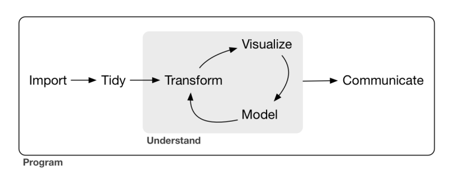
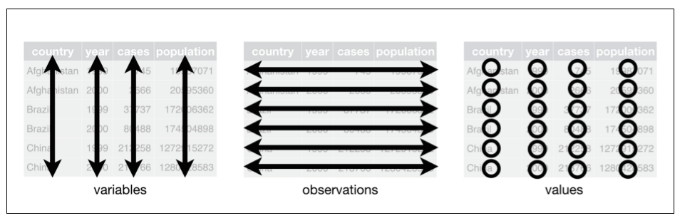

Objetos en R
Existen diferentes tipos de objetos en R, algunos de los más importantes:
- Vectores: podemos generar listas con la función
c()o con el operador:, entre otros. - Matrices: la función
matrix()permite crear objetos de tipo matriz. - Data.frames: las bases de datos creadas internamente (mediante
data.frame()) o importadas desde archivos externos suelen ser de este tipo. - Listas: la función
list()permite generar objetos de tipo lista.
Ejercicio 1
Queremos generar una secuencia de 100 números como un vector. El vector debe iniciarse en 2 y el incremento debe ser de 1 unidad.
Escribe el código de R:
# Genera la secuencia con el operador :2:101 # Forma 1
seq(2,length.out=100) # Forma 2Ejercicio 2
Comprueba el tipo de objeto que devuelve el siguiente código.
Utiliza una función ya existente que nos permita saber el tipo de
objeto de R que es mod:
x <- -100:100/10
y <-1.3*x - 1.2*x^2 + rnorm(length(x),mean=12,sd=3)
DF <- data.frame(VD=y,VI=x)
mod <- lm(VD~VI,data=DF)# Utiliza la función str()str(mod)
Podemos generar vectores y secuencias con funciones como
c() o rep(). En el primer caso podemos
encadenar valores numéricos o carácter separados con comas, mientras que
en el segundo podemos repetir un valor o secuencia de acuerdo a un
determinado patrón, por ejemplo, rep(c(1,2),c(1,2))
generaría el vector [1] 1 2 2.
Ejercicio 3
Genera un vector,estudiantes, con las puntuaciones de 5
estudiantes, 84 74 67 90 78, mediante una función de R:
estudiantes <- ____# Utiliza la función c()estudiantes <- c(84,74,67,90,78)Ejercicio 4
Genera un vector categórico de tamaño 60 en el que se ha generado al
azar etiquetas con dos posibles valores: Control y
Tratamiento. Llama al objeto grupo:
grupo <- c('Control','Tratamiento')# Utiliza la función rep() combinada con sample()
# Si quieres que siempre se obtenga el mismo
# resultado debes fijar la semilla aleatoria: set.seed() set.seed(123)
grupo <- sample(rep(c('Control','Tratamiento'),each=30))Ejercicio 5
El anterior objeto era de tipo carácter (chr) pero en
general nos interesará tratarlo como objeto de tipo factor. Genera un
nuevo objeto grupo2 Para ello utliza la función
factor() y compáralo con el objeto del ejercicio
anterior
set.seed(123)
grupo <- sample(rep(c('Control','Tratamiento'),each=30))
grupo2 <- ___# Utiliza la función str()grupo2 <- factor(grupo)
str(grupo)
str(grupo2)Importación de bases de datos con R
Podemos importar bases de datos al entorno de trabajo de R desde varios formatos.
Desde un archivo de texto: la función
read.table().Desde un archivo de SPSS: hay varios paquetes que permiten importar archivos *sav. Aquí utilizaremos el paquete
haveny la función `read_sav``.Desde un archivo de Excel: la función
read_xlsxdel paquetereadxlpermite importar archivos de este tipo.
Ejercicio 1
Crea un objeto llamado df1 a partir de la importación
del archivo visualmemory.txt que se encuentra en
eldirectorio data. Una vez importado, muestra las
primeras 3 filas.
df1 <- read.table(____)# Utiliza la ayuda de read.table() para conocer los
# argumentos de la función
# La función head() te permite imprimir las primeras
# filasdf1 <- read.table('data/visualMemory.txt')
head(df1,n=3)Ejercicio 2
Importa el archivo Database_PANAS.sav que se
encuentra en el directorio data y genera un data.frame
llamado df2. Reporta el número de variables, observaciones
y valores perdidos de la base de datos.
df2 <- haven::read_sav(____)# Utiliza la ayuda de la función read_sav para
# conocer los argumentos de la función
# Prueba las funciones dim() y summary() df2 <- haven::read_sav('data/Database_PANAS.sav')
dim(df2)
summary(df2)Ejercicio 3
Importa el archivo visualMemory.xlsx que se
encuentra en el directorio data y genera un data.frame
llamado df3. Reporta el número total de valores perdidos de
la base de datos mediante una única instrucción.
library(readxl)
df3 <- read_xlsx(____)
df3# Utiliza la función is.na() conjuntamente con la función
# sum()library(readxl)
df3 <- read_xlsx('visualMemory.txt')
sum(is.na(df3))Gestión de datos con R
Vamos a practicar ahora el acceso a elementos de distintas estructuras de datos (vectores, matrices, arrays, listas, data.frames).
En primer lugar, podemos utilizar el operador
[]para acceder a partes concretas de la estructura de datos.El operador
$permite acceder a toda la variable de una base de datos.Equivalentemente, para tener acceso a una variable podemos utilizar el código:
['NOMBRE VARIABLE'].Conviene conocer la función
with(BASEDATOS,INSTRUCCIÓN(VARIABLE))pues nos puede ahorrar algo de código en algunas situaciones.
Ejercicio 1
Accede a los siguientes valores del objeto df2 creado en
un ejercicio anterior:
Elemento de la primera fila y la segunda columna.
Elementos de la segunda fila.
Elementos de las columnas 2 a 5.
df2 <- haven::read_sav('data/Database_PANAS.sav')
df2[___]# Utiliza el operador []
# Ten en cuenta que un data.frame tiene 2 dimensionesdf2[1,2]
df2[2,]
df2[,2:5]Ejercicio 2
Imprime la variable before de la base de datos
df1 mediante el operador
df1 <- read.table('data/visualMemory.txt')
___$___# La estructura es BASE$VARIABLEdf1$beforeEjercicio 3
Lleva a cabo la operación anterior pero combinando el operador
[] con el nombre de la variable:
df1 <- read.table('data/visualMemory.txt')
df1[___]# La estructura es BASE['VARIABLE']df1['before']Ejercicio 4
Imprime todas las variables de la base de datos df2 cuyo
nombre empiece por la letra N:
df2 <- haven::read_sav('data/Database_PANAS.sav')
df2[___]# Utilizad la función colnames()
# Utilizad la función starsWith()df2[startsWith(colnames(df2),'N')]Funciones con R
Las funciones de R son un objeto esencial en el entorno. La estructura básica de éstas es la siguiente:
NOMBRE <- function(ARGUMENTOS){ CUERPO DE LA FUNCIÓN }
Ejercicio 1
Vamos a crear una función que calcule la suma de cuadradados de un
vector numérico mediante la siguiente fórmula: \(\sum_{i=1}^nx_i^2\). Llamaremos a esta
función sumcuad y la aplicaremos al objeto
VECT:
sumcuad <- function(___)
VECT <- 100:340# Necesitaremos un argumento correspondiente al vector numérico
# En el cuerpo de la función únicamente se debe elevar al cuadrado
# los valores y sumarlossumcuad <- function(x){sum(x^2)}
sumcuad(VECT)Ejercicio 2
Modificad la función anterior para que calcule la suma de cuadrados
de números pares. Es decir \(\sum_{i=1}^nx_i^2·I_i\), donde \(I=\begin{cases}I_i=1 \text{ si } mod(x_i,2)=0\\
I_i=0 \text{ en otro caso}\end{cases}\). Llama a esta nueva
función sumcuad2 y aplícala de nuevo al vector
VECT.
sumcuad2 <- function(___)
VECT <- 100:340# Utiliza el operador %% que en R
# se corresponde con la función módulosumcuad2 <- function(x){
sum(x[!x%%2]^2)
}
sumcuad2(VECT)Estructuras condicionales
El uso de estructuras condicionales es muy habitual en la ciencia de datos pues nos permiten:
Filtrar observaciones de una estructura de datos
Ejecutar bloques de código en función del cumplimiento de una o varias condiciones
Modificar el comporatamiento de una función en función del tipo de dato o la fase del proceso en el que se encuentre…
En R encontramos distintas estructuras condicionales, algunas de las más importantes:
- IF/ELSE: las estructuras SI/ENTONCES permiten evaluar 1 o más condiciones.
ifelse(): es una versión vectorizada que resultad de gran utilidad muchas ocasiones
Para especificar las distintas condiciones que puedan resultar de utilidad deberemos utilizar en muchos casos operadores lógicos:
Operadores Y, O y NO:
&,|, y!, respectivamente.Igualdad: se utiliza
==.Desigualdad: se utiliza
!=Mayor o igual que: se utiliza
>=.Menor o igual que: se utiliza
<=.Otro operador que puede resultar de utilidad es el operador EN:
%in%.
Ejercicio 1
Supongamos que en un juego de dados, se gana siempre que al lanzar simultáneamente tres dados su suma sea superior a 10 puntos. Vamos a escribir una función que simule el juego “Suma tres dados”:
suma3dados <- function(___)# Utiliza sample(1:6,3,replace=TRUE) para simular
# el lanzamiento de los 3 dados
# Luego evalúa la suma con el condicional if elsesuma3dados <- function(){
suma <- sum(sample(1:6,3,replace=TRUE))
msg <- paste0('La suma es ',suma)
msg2 <- if(suma>10){', has ganado.'} else {', has perdido.'}
paste0(msg,msg2)
}
suma3dados()Ejercicio 2
Simula ahora el lanzamiento de una moneda, mediante la función
runif() (ver la ayuda de la función para saber cómo
funciona). En este caso, si el valor generado es menor que 0.5 se
considerará que se ha obtenido una cara y si el valor es mayor o igual
se considerará que se ha obtenido una cruz. Genera 500 lanzamientos y
asigna la etiqueta “cara/cruz” a cada resultado mediante la función
ifelse(). Llama al vector resultados. ¿Qué
esperas obtener si la moneda no está trucada?
resultados <- ifelse(___)# Para conocer la distribución resultante puedes utilizar
# la función table() sobre el vector resultadosresultados <- ifelse(runif(500)<.5,'Cara','Cruz')
table(resultados)Estructuras iterativas
Existen dos estructuras iterativas básicas en R que deben conocerse:
for y while:
Las estructuras
forpermiten repetir una determinada tarea un número predefinido de veces pues debemos especificar el inicio y el final de la secuencia de iteraciones. La estructura es:for(SECUENCIA){CÓDIGO A ITERAR}. En general la secuencia se puede declarar comoÍNDICE in INICIO:FINAL.La estructura
whilepermite repetir una secuencia de acciones mientras se cumple la condición, en este caso no sabemos a priori el número de veces que se va a iterar. La estructura general es:while(CONDICIÓN){CÓDIGO A ITERAR}
Ejercicio 1
Crea un función que cuente las veces que una cadena de caracteres del
vector que se presenta a continuación (vector VECT)
contiene una ‘a’
VECT <- c('Barcelona','Valencia','Gijón','Cartagena','Guadalajara')
res <- vector()
for(___){
res[___] <- ___
}
res# La secuencia debe relacionarse con el tamaño de VECT
# strsplit() permite separar los caracteres de la cadena
# En cada i-ésima iteración suma el número de caracteres iguales
# al caracter 'a' y asígnalo al i-ésimo elemento de resVECT <- c('Barcelona','Valencia','Gijón','Cartagena','Guadalajara')
res <- vector()
for(i in 1:length(VECT)){
res[i] <- sum(strsplit(VECT[i],'')[[1]]=='a')
}
resEjercicio 2
Inserta en la estructura while la condición que el
número generado al azar sea más grande que -6. ¿Cuántas
iteraciones necesita para finalizar? ¿Cómo podemos acortar el número de
iteraciones?
cont <- 0
numero <- rnorm(1)
while(___){
numero <- ___
cont <- ___
}# Utiliza una condición lógica en while()
# Actualiza en cada iteración el número aleatorio
# y el contador de iteracionescont <- 0
numero <- rnorm(1)
while(numero>(-6)){
numero <- rnorm(1)
cont <- cont + 1
}Introducción a tidyverse
tidyverse es un conjunto de paquetes que posibilita las principales tareas en todo proyecto de Ciencia de Datos. En el núcleo del tidyverse encontramos los paquetes: readr, tidyr, dplyr y ggplot2.
Estos paquetes comparten una filosofía de diseño, sintaxis y estructuras de datos similares.
Los paquetes de tidyverse trabajan con dos estructuras de datos básicas: data.frames y tibbles.
Modelo de Ciencia de Datos
Seguiremos el modelo propuesto por Wickham y Grolemund (2023):

Os recomiendo encarecidamente echarle un vistazo a este MARAVILLOSO libro libre.
tidyverse es un conjunto de paquetes que posibilita las principales
tareas en todo proyecto de Ciencia de Datos. En el núcleo del tidyverse
encontramos los paquetes: readr, tidyr,
dplyr y ggplot2.
Estos paquetes comparten una filosofía de diseño, sintaxis y estructuras de datos similares.
Los paquetes de tidyverse trabajan con dos estructuras de datos
básicas: data.frames y tibbles.
Lectura de datos con readr
La funcioń read_csv() incluida en readr nos
permite cargar archivos de tipo csv (valores separados por
comas).
Ejercicio 1
Carga la base de datos disponible en https://raw.githubusercontent.com/deepstartup/COVID-19-Community-Mobility-Dataset/master/world_mobility_with_covid_infection_count.csv
mediante read_csv(), llama al nuevo objeto
datosCOVID e inspecciona su estructura.
datosCOVID <- read_csv(file='___')# Consulta la ayuda de la función read_csv()
# Recuerda la función str()datosCOVID <- read_csv(file='https://raw.githubusercontent.com/deepstartup/COVID-19-Community-Mobility-Dataset/master/world_mobility_with_covid_infection_count.csv')
datosCOVID |> str()Recordad que existen otros paquetes como haven o
readxl que permiten la importación de otros tipos de
archivos.
El paquete magrittr
En el ejemplo anterior he utilizado un “pipe” básico (incluído en R
> 4.1, https://www.r-bloggers.com/2021/05/the-new-r-pipe/):|>.
Los pipes son herramientas muy útiles para expresar una secuencia de
tareas. El paquete magrittr incluye otro pipe muy utilizado
%>%. El paquete se carga automáticamente al cargar el
tidyverse en la sesión de trabajo.
Por qué utilizar pipes?
Permite estructurar una secuencia de operaciones de izquierda a derecha en lugar de dentro a fuera.
Es una buena forma de evitar anidamiento en la llamada de funciones.
Minimiza el uso de variables locales y la definición de funciones.
Facilita la incorporación de nuevos pasos a una secuencia ya creada.
Ejercicio 1
Expresa la segunda instrucción mediante pipes.
x <- c(0.109, 0.359, 0.63, 0.996, 0.515, 0.142, 0.017, 0.829, 0.907)
round(exp(diff(log(x))), 1)# Extrae y combina los distintos elementos mediante
# pipes, desde dentro a fuerax |> log() |>
diff() |>
exp() |>
round(1)
No se recomienda utilizar pipes cuando:
Sean necesarios 10 o más pasos para obtener un resultado.
Hay múltiples inputs y outputs.
Hay una dependencia compleja en la estructura (i.e no lineal) detrás de los cálculos a realizar.
Organización de datos con tidyr
Se dice que un data.frame (o tibble) es
tidy si cumple las siguientes condiciones:
Cada variable está en una columna.
Cada observación o caso ocupa una fila.
Cada tipo de observación conforma una única tabla.

Ejercicio 1
¿Esta base de datos es tidy?
table1# Esta base de datos es tidy: intenta calcular, por ejemplo,
# la tasa de contagios: cases/populationEjercicio 2
¿Esta base de datos es tidy?
table2# Esta base de datos no es tidy. De nuevo, intenta calcular
# la tasa de contagios: cases/populationEjercicio 3
¿Esta base de datos es tidy?
table3# Esta base de datos no es tidyEjercicio 4
¿Estas bases de datos son tidy?
table4a
table4b# No son tidy.
Algunas de estas bases de datos muestran, entre otros, dos de los problemas más comunes al trabajar con datos:
Una variable está codificada a lo largo de múltiples columnas.
Una observación está codificada a lo largo de múltiples filas.
Pivotes: formato largo
Las funciones pivote permiten solventar estos problemas y preparar las bases de datos para que puedan ser usadas como entrada en el tidyverse.
Table4a yTable4b son ejemplos de variables
en múltiples columnas.
Podemos utilizar la función pivot_longer para solventar
el problema:
td4a <- table4a |>
pivot_longer(c(`1999`, `2000`), names_to = "year", values_to = "cases")
td4aNótese que year y cases son nuevas variables, por lo que debe ir
entre comillas. Haz lo mismo con la base de datos
table4b.
td4b <- ___# Llama a las nuevas variables year y populations
# recuerda que éstas deben ir entre comillastd4b <- table4b |>
pivot_longer(c(`1999`, `2000`), names_to = "year", values_to = "population")
td4bAhora podemos combinar ambas bases de datos en un único tibble:
left_join(td4a,td4b)# Combina los dos ejercicios anteriorestd4a <- table4a |>
pivot_longer(c(`1999`, `2000`), names_to = "year", values_to = "cases")
td4b <- table4b |>
pivot_longer(c(`1999`, `2000`), names_to = "year", values_to = "population")
left_join(td4a,td4b)Los años se pueden escribir rodeados con backticks (` `) o entre comillas.
Pivotes: formato ancho
Cuando una observación está codificada a lo largo de diversas filas,
ésta debe dividirse en distintas columnas dando lugar a diferentes
variables. table2 es un ejemplo de este caso. La función
pivot_wider() nos permite acortar y ensanchar la base de
datos.
table2 |>
pivot_wider(names_from = ___, values_from = ___)
table2# La variable que da nombre a las nuevas variables es type
# y de la que extraemos los valores numéricos que originarán las nuevas variables es counttable2 |>
pivot_wider(names_from = type, values_from = count)
table2Separación de variables
Como reestructuramos la table3? Mediante la función
separate() podemos separar una columna en múltiples
columnas.
table3 |>
separate(___, into = ___, convert =___)# El primer argumento es la variable original que debemos separar
# Por defecto buscará delimitadores no alfanuméricos
# El segundo argumento especifica los nombres de las nuevas variables
# Mirad la ayuda de la función separate() para saber qué hace converttable3 |>
separate(rate, into = c('cases', 'population'))
table3Unir columnas
La función unite() consigue el efecto contrario de la
función separate(): combina múltiples columnas en una sola.
Haz que el objeto table5 sea tidy.
table5
table5 |>
unite(new, ___, ___, sep='') |>
mutate(new = as.integer(new)) |>
separate(___, into = ___, convert = ___)# Une century y year en una nueva variable: new
# Haz que la variable new sea numérica
# Separa rate en case y populationtable5
table5 |>
unite(new, century, year, sep='') |>
mutate(new = as.integer(new)) |>
separate(rate, into = c('cases', 'population'), convert = TRUE)Transformar datos con dplyr
Utilizaremos el paquete dplyr para crear nuevas
variables, resumir, renombrar o reordenar las observaciones de una base
de datos. Consulta su “cheatsheet” en:
https://4.files.edl.io/b9e2/07/12/19/142839-a23788fb-1d3a-4665-9dc4-33bfd442c296.pdf
Las principales acciones con dplyr son:
Filtrar observaciones:
filter().Reordenar observaciones:
arrange().Seleccionar variables:
select().Modificar variables:
mutate().Agrupar observaciones:
group_by().Resumir variables:
summarise().
Otras funciones son: pull(),
n()/count() y glimpse().
Ejercicio 1
Con la base de datos de movimientos durante la pandemia de COVID
utiliza dplyr para:
Agrupar la base de datos por países (variable
COUNTRY_REGION).Calcula la media, desviación típica, mínimo y máximo del cambio porcentual en movimientos realizados a parques y jardines (variable
PARKS_PCT).
library(kableExtra)
datosCOVID <- read_csv(file='https://raw.githubusercontent.com/deepstartup/COVID-19-Community-Mobility-Dataset/master/world_mobility_with_covid_infection_count.csv')
datosCOVID |> group_by(___) |> summarise(Mean=mean(___),SD=sd(___),
Min=min(___),Max=max(___),
.groups = 'drop') |>
as.data.frame() %>% kable() |> kable_styling("striped")library(kableExtra)
datosCOVID <- read_csv(file='https://raw.githubusercontent.com/deepstartup/COVID-19-Community-Mobility-Dataset/master/world_mobility_with_covid_infection_count.csv')
datosCOVID |> group_by(COUNTRY_REGION) |> summarise(Mean=mean(PARKS_PCT),SD=sd(PARKS_PCT),
Min=min(PARKS_PCT),Max=max(PARKS_PCT),
.groups = 'drop') |>
as.data.frame() %>% kable() |> kable_styling("striped")